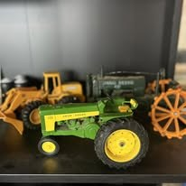

Furniture & Home
Furniture, décor, and useful home pieces
Tables, shelving, décor, kitchenware, glassware, lamps, and the kinds of practical items people actually use.
Weatherford Local Resale & Thrift is not built around one narrow category. It is a mixed resale shop with practical pieces, fun finds, and rotating inventory that rewards people who like to browse.
This page is built to give customers a feel for the shop, not promise exact current inventory. The whole draw is that the selection changes.
Tables, shelving, décor, kitchenware, glassware, lamps, and the kinds of practical items people actually use.

The good stuff for people who enjoy spotting something different, nostalgic, or conversation-worthy.

Game accessories, media, music gear, and the kind of finds that make shoppers stop and say, “That’s cool.”

Sports cards, collectibles, trinkets, keepsakes, and smaller items that are easy to miss if you rush through.

Not every stop is about rare finds. Sometimes it is about grabbing something useful at a better price.

Toys, novelty pieces, display items, and those small finds people love picking up while they browse.

That is exactly why the shop is worth revisiting. Inventory moves and the mix changes all the time.
If you like broad resale shopping instead of one-note inventory, this store is built for that kind of browsing.
The value of a site like this is not just showing pretty photos. It helps customers understand what kind of stop this is before they ever pull in: casual, local, mixed inventory, and always changing.